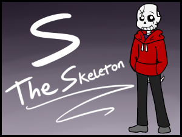

S the Skeleton
S the Skeleton is an Undertale based OC of mine. He's a chill skeleton who just wants to take care of his family, but is haunted by a dark past.
S the Skeleton is an Undertale based OC of mine. He's a chill skeleton who just wants to take care of his family, but is haunted by a dark past.